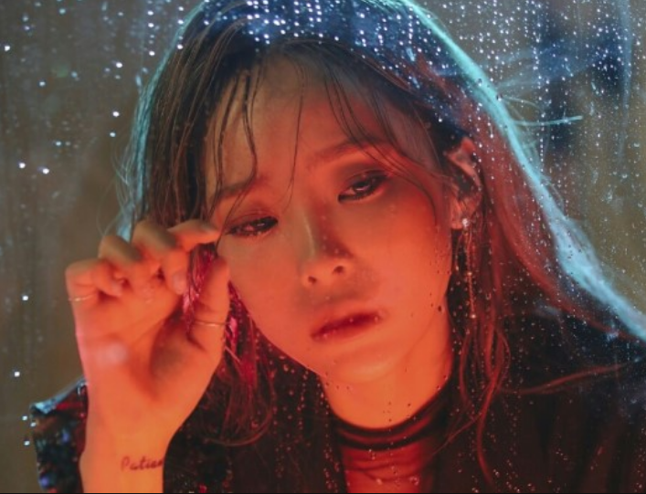
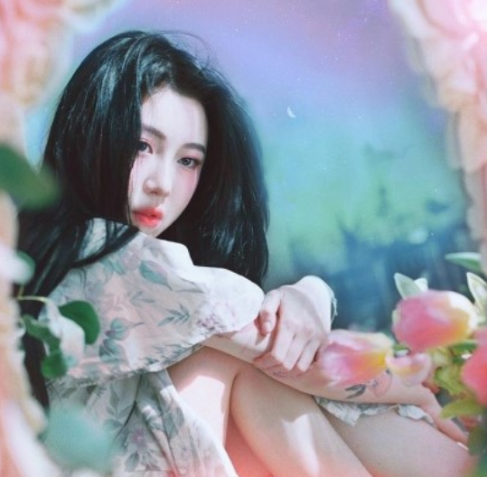
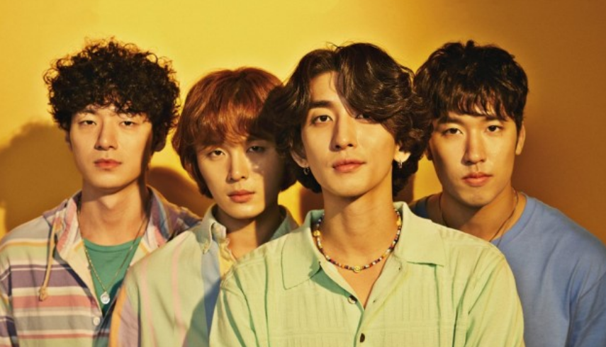

헤이즈

2014년 싱글앨범 [조금만 더 방황하고]로 데뷔한
헤이즈(Heize)는 언프리티 랩스타 2에서 인지도를 쌓은 후,
2016년 12월 '저 별'이라는 곡으로 첫 1위를 달성한다.
그 후, 미니앨범 [///(너 먹구름 비)], [바람] 등으로
대세를 이어가다가 2019년 정규앨범 [She's Fine]으로 컴백했다.
대표곡
- And July - And July
- 널 너무 모르고 - ///
- 저 별 - ///
- Jenga - 바람
- She's Fine - She's Fine
백예린

2012년 15&라는 여성 듀엣 그룹에서 활동하며 디지털 싱글 [I Dream]
으로 데뷔했다. 그러나 서로 추구하는 스타일이 달랐던 탓에 15&는 잠정중단되었으며,
이후 첫 EP [FRANK]를 발매하며 솔로 여가수로써의 길을 걷게 된다.
자신의 곡은 물론, 타 가수의 곡을 커버할 때에도 그녀만의 음색과 스타일로
뛰어난 보컬역량을 보여준다.
대표곡
- 우주를 건너 - FRANK
- Bye bye my blue - Bye bye my blue
- 그건 아마 우리의 잘못은 아닐 거야 - Our love is great
- 야간비행 - Our love is great
- Square - Every letter I sent you.
스텔라장
2016년 EP [Colors]를 시작으로 독특하고 솔직한 컨셉과 재치있는 가사,
아름다운 화음이 어우러진 곡으로 대중들의 시선을 사로잡았다.
또한 자신의 유학 경험을 살려, 프랑스어로 된 곡을 커버해 유튜브에서
많은 인기를 끌기도 했다.
대표곡
- Colors - Colors
- 월급은 통장을 스칠 뿐 - 월급은 통장을 스칠 뿐
- 어떻게 사람이 늘 사랑스러울 수 있어 - 유해물질
- 빌런(Villain) - STELLA I
잔나비

92년생 동갑내기 남자 4명으로 구성된 이 밴드의 이름은 '잔나비'로,
특이하게도 원숭이라는 뜻을 가진 순우리말이라고 한다.
2014년 디지털 싱글 [로켓트]로 정식 데뷔했으며, 다른 가수들과의 콜라보와
꾸준한 음악활동을 통해 지속적으로 성장해왔다.
대표곡
- 뜨거운 여름밥은 가고 남은 건 볼품없지만 - MONKEY HOTEL
- 주저하는 연인들을 위해 - 전설
- 꿈과 책과 힘과 벽 - 전설
- She - She(Hidden Track No.V 1월 선정곡)